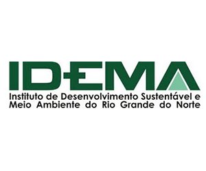
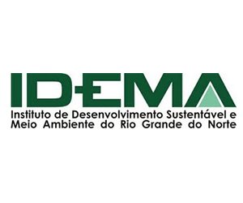

Este projeto iniciado em 2005 tem como foco na preservação do sapo-boi, ou mais conhecido como sapo cururu (Rhinella marina) e as demais espécies do gênero Rhinella. Como essa espécie se adapta bem em ambientes urbanos e de transição, torna-se difícil da espécie sobreviver frente as ameaças do meio.
Projeto Amphibia Agro
Este projeto iniciado em 2010 por alunos da EAJ tem como foco principal introduzir espécies de Bufonidae em ambiente agrícolas para controlar as pragas e diminuir substancialmente o uso de pesticidas. O projeto foi bem sucedido nas plantações de melão em Macau e de algodão em Pau dos Ferros
Projeto Sapos do RN
Este projeto criado por herpetólogos do grupo em 2006 tem como objetivo viajar pelo RN e fotografar os anuros, mostrando assim a diversidade de anuros que o estado tem através de um livro a ser escrito.
 
